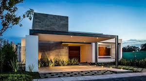
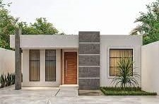

Residencia Contemporánea Urbana
Esta casa tiene un diseño moderno y minimalista, perfecto para terrenos residenciales amplios. Su estilo resalta por la simplicidad de las líneas, la integración de materiales contemporáneos y un enfoque en la funcionalidad y estética.
Elementos destacados:
•Fachada limpia y geométrica: Líneas rectas y proporciones equilibradas que le dan un aspecto sofisticado.
•Techo plano con estructura voladiza: Ofrece sombra y protege la entrada y la cochera, además de aportar un toque arquitectónico.
•Materiales contemporáneos: Uso de concreto expuesto, madera y detalles metálicos para un diseño elegante y moderno.
•Iluminación exterior: La iluminación integrada resalta las texturas y formas durante la noche.
•Jardinería minimalista: Complementa el diseño sin sobrecargar visualmente el espacio.
Es ideal para quienes buscan un hogar c√≥modo, est√©tico y funcional, que combine modernidad con espacios bien organizados. ¬øTe gustar√≠a más informaci√≥n sobre este tipo de casas , su distribuci√≥n , dise√±o interior o alguna recomendaci√≥n de planos? üòä
SABER MAS
Casa Minimalista con Pórtico Funcional
Esta casa de estilo moderno compacto, caracterizada por un diseño simple y funcional, ideal para terrenos pequeños o medianos. Este tipo de vivienda combina elementos minimalistas con detalles elegantes, como el uso de colores contrastantes (en este caso, blanco y negro), líneas rectas y un enfoque en la practicidad.
Elementos destacados:
•Techo plano: Típico del diseño moderno.
•Pórtico estructural: La estructura negra que sobresale del frente crea un marco estético y funcional que puede usarse como cochera o zona de sombra.
•Ventanas amplias: Permiten aprovechar la iluminación natural y ofrecen vistas al exterior.
•Materiales y colores: Los colores neutros (blanco, negro, gris) enfatizan la modernidad, mientras que los detalles de vegetación agregan equilibrio visual.
Este tipo de dise√±o es ideal para quienes buscan un hogar c√≥modo, eficiente y con un dise√±o actual. ¬øTe gustar√≠a más informaci√≥n sobre este tipo de casas , su distribuci√≥n , dise√±o interior o alguna recomendaci√≥n de planos? üòä
SABER MAS

Casa Minimalista de Una Planta
Esta casa tiene un diseño minimalista y funcional, ideal para viviendas de interés medio o pequeños desarrollos residenciales. Se enfoca en la practicidad, con un diseño limpio y sencillo que utiliza los espacios de forma eficiente.
Elementos destacados:
•Diseño compacto y simétrico: El frente de la casa está balanceado, con ventanas de ambos lados que aportan iluminación natural.
•Detalle decorativo central: La pared con acabado de piedra o revestimiento texturizado en el centro da un toque elegante y moderno, contrastando con los colores lisos del resto de la fachada.
•Puerta principal de madera: Agrega calidez y contraste al diseño, destacándose como un elemento visual clave.
•Ventanas rectangulares: Proporcionan un diseño simple, funcional y estético.
•Jardín frontal minimalista: Pequeñas áreas verdes complementan la fachada sin recargar el espacio.
Este dise√±o es ideal para familias peque√±as o como primera vivienda, ya que combina funcionalidad con una apariencia moderna y atractiva. ¬øTe gustar√≠a más informaci√≥n sobre este tipo de casas , su distribuci√≥n , dise√±o interior o alguna recomendaci√≥n de planos? üòä
SABER MAS
Residencia de Lujo Moderna
Esta casa corresponde a un diseño contemporáneo y de lujo, con un enfoque en la integración de los espacios interiores y exteriores, ideal para quienes buscan un estilo moderno y funcional, sin dejar de lado la sofisticación.
Elementos destacados:
•Diseño en dos plantas: Maximiza el espacio del terreno y permite una distribución funcional, separando áreas sociales en la planta baja y privadas en la planta alta.
•Grandes ventanales y espacios abiertos: Permiten la entrada de luz natural y generan una sensación de amplitud y conexión con el exterior.
•Materiales modernos: Se observan acabados en concreto, vidrio y madera, que son típicos de la arquitectura contemporánea.
•Terraza cubierta: Un espacio versátil para actividades al aire libre, protegido por el diseño en voladizo del segundo piso.
•Iluminación integrada: Resalta las formas geométricas y crea una atmósfera cálida y acogedora en la noche.
Este dise√±o es ideal para quienes valoran un estilo moderno, amplias vistas y una disposici√≥n funcional del espacio. ¬øTe gustar√≠a más informaci√≥n sobre este tipo de casas , su distribuci√≥n , dise√±o interior o alguna recomendaci√≥n de planos? üòä
SABER MAS